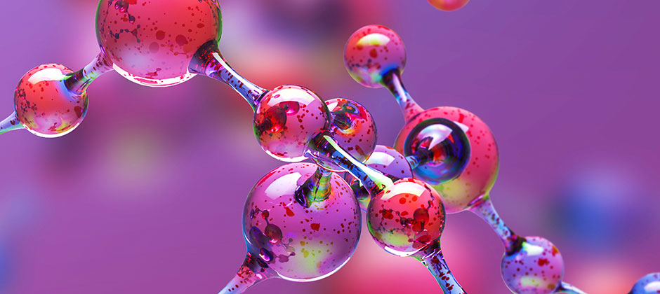
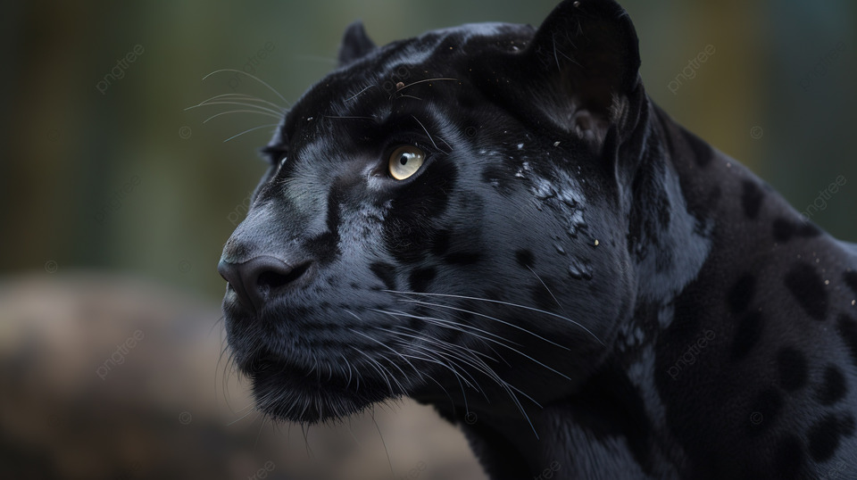

Os ecossistemas aquáticos são classificados conforme as características de: temperatura, salinidade, movimentação da água, profundidade e incidência de raios solares

BLOG BIO
BIOLOGIA
MOLECULAR
A biologia molecular estuda a estrutura química e física de macromoléculas, tais como DNA, RNA e proteínas, procurando entender as atividades biológicas não só nas células, mas muitas vezes entre as células.

BLOG BIO
VIDA
ANIMAL
O reino animal é dividido em diversos filos. Os principais são: poríferos, cnidários, platelmintos, nematódeos ou nematelmintos, anelídeos, equinodermos, moluscos, artrópodes e cordados.